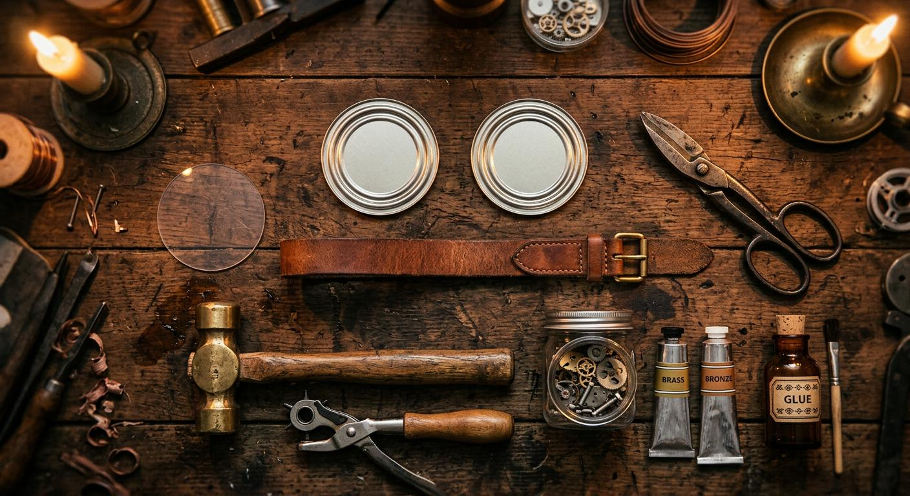
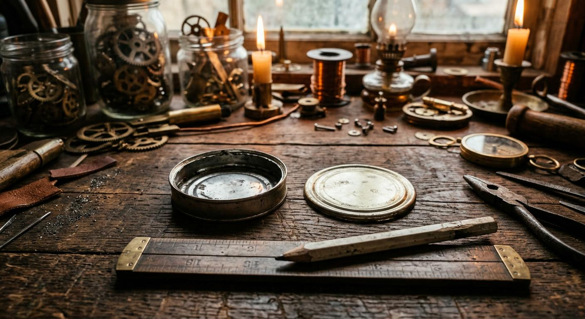
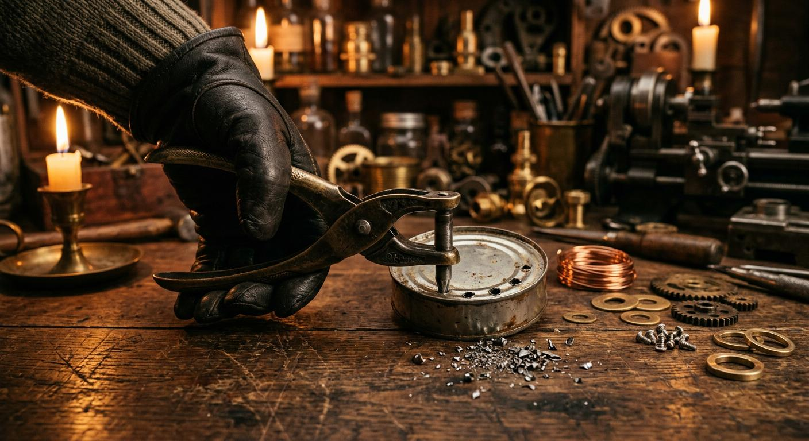
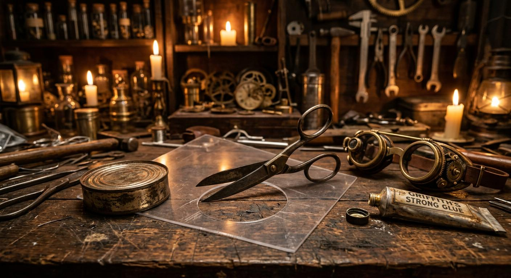
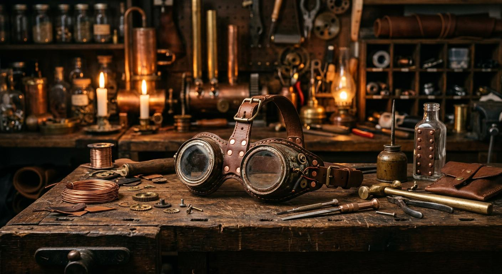
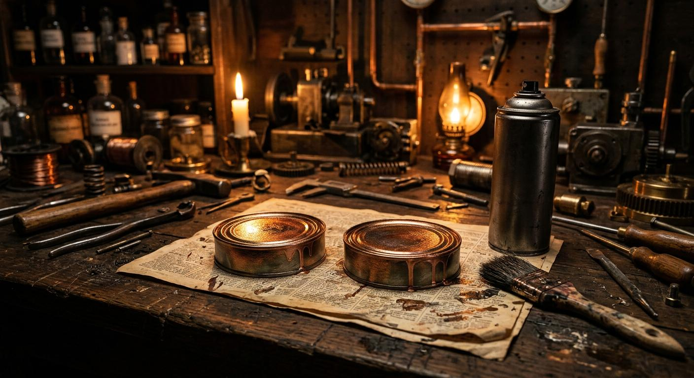
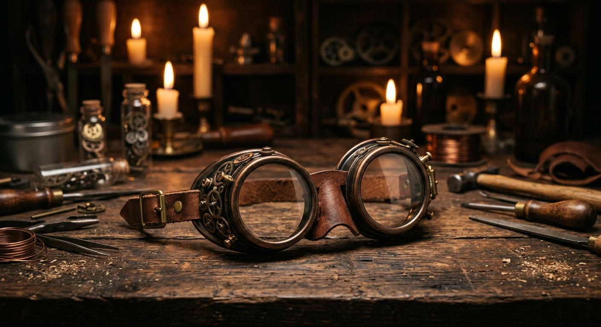

DIY Steampunk Goggles: Build Your Own in 30 Minutes
Updated 2026-11-15
Built and photographed in the Steamgears workshop, Aabenraa, Denmark — original build October 2026. Last updated: October 26, 2026.
There is no faster way to look “steampunk” than a pair of goggles. They sit at the intersection of everything the genre loves: Victorian engineering, aviation, mad science and a bit of industrial grit. The best part? You can build a convincing pair in under an hour — often for close to nothing.
This guide covers three ways to make steampunk goggles: a fast cardboard version, a solid can-lid build and a premium upgrade of welding goggles. Pick your mission profile and start building.
Quick answer: You make steampunk goggles by cutting two round rims (from cardboard or aluminium can lids), adding a leather or elastic strap, gluing in a clear plastic lens, painting everything bronze or copper, and finishing with 1–3 small gears. A convincing pair takes 30 minutes to 2 hours and costs $0–10 in materials. In our October 2026 workshop test, the can-lid version came out best: two aluminium can lids, a strap cut from an old belt, report-cover lenses and bronze acrylic paint — about $7 total and 1 hour 50 minutes of work.
New to the genre? Start with our complete guide on how to make a steampunk costume — goggles are Step 3 of the full outfit.
What You Need to Make Steampunk Goggles
The full build is flexible, but this is the standard kit:
- Goggle base: welding goggles, aluminium can lids, or cardboard (2–4 mm)
- Strap: old leather belt or faux leather strip, 2–3 cm wide
- Lenses: transparent plastic, cellophane, or glass jar lids for the ambitious
- Paint: bronze, copper or gunmetal acrylic + a dry brush
- Base: two aluminium can lids from standard soda cans (free — straight from the workshop coffee run)
- Strap: cut from an old leather belt, 2.5 cm wide ($0 thrifted; a new basic belt is about $8)
- Lenses: clear plastic cut from an A4 report cover ($1)
- Paint: matte black primer + bronze acrylic, one small pot of each (~$4 for both)
- Details: a $2 packet of watch parts, hot glue sticks, a leather offcut for the nose bridge
- Details: gears, watch parts, small bolts, rivets or brads
- Glue: hot glue gun or strong contact adhesive
What we used (Steamgears workshop test, October 2026)
We built the can-lid version with exactly this bill of materials — prices from our own October 2026 workshop build:
Total: about $7 and 1 hour 50 minutes, most of it drying time. That matches the cost estimate above: a can-lid build runs $5–10 in materials.
Method 1: Cardboard Goggles (30 Minutes, Almost Free)
Perfect for your first pair or a last-minute event.
In one line: stack three cardboard rim layers, glue in cellophane lenses, thread a strap, paint bronze and dry-brush gold.
- Draw two circles (approx. 5–6 cm) on sturdy cardboard and cut them out — these are your rims
- Cut slightly smaller inner circles and glue a circle of clear cellophane behind each opening as the lens
- Stack three rim layers with glue for depth, then punch a small hole on each side of both rims
- Thread a leather strip or sturdy elastic through the holes to create the strap
- Paint everything bronze or copper, then dry-brush the edges with gold for a machined look
- Add one or two small gears around the rims — restraint is realism
Tip: crumple the cardboard lightly before painting. Micro-creases catch paint and instantly read “worn metal”.
Method 2: The Can-Lid Build (The Classic)

This version has genuine depth and weight — the pair that gets photographed.
In one line: two sanded can lids, punched strap holes, glued clear lenses, joined with a strap, then primer and layered bronze paint plus a few watch parts.
- Remove two aluminium can lids (a can opener removes the flat panel cleanly) and sand the edges

- Punch matching holes on each side of both lids for the strap

- Cut a piece of clear plastic (packaging or a report cover) into two circles and glue them inside each lid as lenses

- Join the lids with the strap, adjusting the gap so they sit like a welding mask over the eyes

- Prime with a layer of matte paint, then build up bronze layers and let drips run slightly down the rim

- Glue watch parts or tiny bolts around the rim and add a leather nose bridge strip

Optional upgrade: hinge the two rims together with a tiny brad so they fold flat like antique safety goggles.
Workshop notes from our October 2026 build: the full can-lid pair took 1 hour 50 minutes, and roughly 45 minutes of that was hands-on — the rest was drying time. Two things we learned the hard way: (1) paint the lids before cutting and gluing the clear lenses, or paint mist settles on the plastic and you cut new lenses; (2) let the matte primer dry a full 20 minutes between coats — we rushed one lid and the first bronze coat streaked, so it had to be repainted. Sanding the lid edges properly also matters more than it sounds: unsanded aluminium edges are sharp enough to nick a strap or skin.
Method 3: Upgrade Welding Goggles (The Premium Route)
If you want authentic weight and shade-5 glass lenses, start from real welding goggles.
In one line: buy round flip-up welding goggles, mask the glass, paint the frames, add leather and a few gears.
- Buy basic welding goggles (often under $20) — the round, flip-up type looks most Victorian
- Mask the glass lenses with tape — you want paint only on the frames
- Paint the frames bronze or gunmetal; dry-brush gold highlights along ridges
- Add leather accents: a strip over the bridge, a wider strap, small corner rivets
- Finish with 1–3 gears max and a chain detail if you have one
This is the version you will actually keep — and it doubles as an everyday accessory for steampunk festivals.
Styling Your Goggles: Three Archetypes
| Archetype | Lens colour | Details |
|---|---|---|
| The Scientist | Clear or pale amber | Copper rims, small watch gears, clean finish |
| The Aviator | Smoked grey | Leather flight strap, rivets, matte gunmetal |
| The Engineer | Deep amber | Heavy weathering, bolt details, soot-darkened edges |
How to Wear Steampunk Goggles
- On the hat: the classic — strap around a top hat or bowler, goggles resting on the brim
- On the forehead: push them up into your hair or around a bandana
- Around the neck: hanging from the strap like a pair of safety glasses at work
Wearing them over your eyes constantly is the rookie move. Goggles are props, not eyewear — let them live on your hat.
Frequently Asked Questions
How do you make steampunk goggles?
Start with a round base (can lids, welding goggles or cardboard), add a leather or elastic strap, insert a clear lens, then paint in bronze or copper and add a few gears. The full step-by-step is above.
What can I use as lenses?
Cellophane, clear packaging plastic, report covers or safety glasses. For real glass, vintage welding goggles come with dark glass lenses included.
How much do DIY steampunk goggles cost?
Cardboard versions cost almost nothing. A can-lid build runs $5–10 in materials, and welding goggles start around $15–25 before decoration.
Where can I buy steampunk goggles instead?
You do not have to build them — our steampunk goggles collection carries ready-made designs. If you enjoy the build, welding goggles from a hardware store are still the best base to modify.
How long does it take to make steampunk goggles?
A no-paint cardboard version takes about 30 minutes. Our workshop-built can-lid pair took 1 hour 50 minutes including drying time, with about 45 minutes of hands-on work. Upgrading welding goggles is mostly painting and glue, so count on 1–2 hours including drying.
Are DIY steampunk goggles safe to wear?
Yes, if you do three things: sand every cut metal edge smooth before handling, use clear plastic (not cut glass) as lenses in can-lid and cardboard builds, and keep glue joints away from load-bearing strap points. We wear our own plastic-lensed workshop builds at events without issues.
Your Next Build
Goggles done? Mount them on your hat and head over to the complete guide on how to make a steampunk costume to build the rest of the outfit, browse steampunk costume ideas for inspiration, or start with steampunk cosplay on a budget if you are counting every dollar.
Happy building, inventor. ⚙️ More build guides are coming to Steamgears.
About the workshop behind this guide. This build was made and photographed at the Steamgears workshop in Aabenraa, Denmark. Steamgears publishes photo-documented steampunk build guides — every build photo in this article comes from our own workbench, not stock photography. Meet the workshop on the About page, or follow the builds on Facebook, Pinterest, Instagram and YouTube.
The Finished Look


Prefer to skip the workbench?
Shop Ready-Made Steampunk Goggles →
Flip-up lenses, adjustable strap, ready to ship.
Complete this look: Airship Captain · Victorian Inventor · Mechanical Explorer
Undecided between building and buying? Read DIY vs. Buy: Steampunk Goggles Compared for an honest cost and durability breakdown — or see how goggles fit into everyday outfits in Casual Steampunk Outfits: Wear the Look Every Day.
Making it yourself? The build page collects the DIY guides — goggles, weekend costumes, 3D-printed props and thrift builds.
How to Make Steampunk Goggles Out of Cardboard
Cardboard is the fastest method in this guide: cut two 8–10 cm circles from 2–4 mm cardboard, punch strap holes on each side, glue in a cellophane or report-cover lens, then join the two circles with a leather or elastic strap running behind the head. Paint the rims bronze or copper, glue on 1–3 small gears, and you have a wearable pair in about 30 minutes. Full measurements and paint order are in Method 1 above.
Once the goggles are done, the next step is the rest of the outfit: our guide to building a DIY steampunk costume walks through all five steps, and if you are working with a tight budget, how to build a steampunk costume for under $100 breaks down every cost. To finish the look, pick pieces from our steampunk accessories checklist.
Shop the look: Copper Pilot Goggles \u2014 Vintage Windproof and a Time Traveler Top Hat with Goggles are the two pieces that turn a home-made pair into a finished costume.